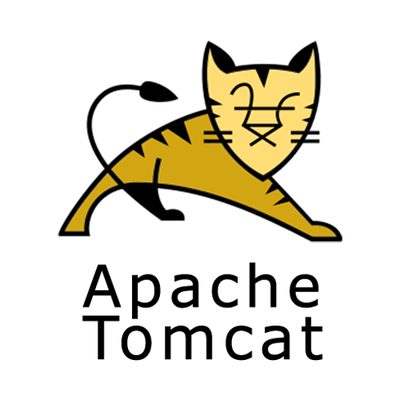
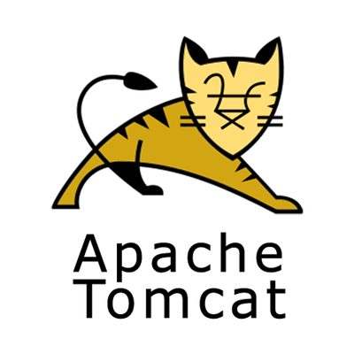
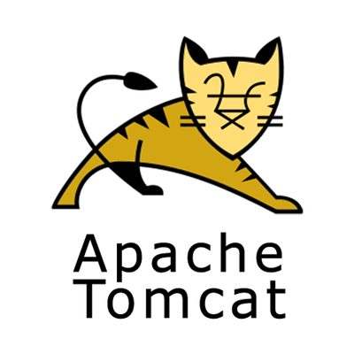

Language


DataBase

Server/Technolohy
 


IDE


유튜브에서 우연히 개발자라는 직업을 소개해 주는 영상을 보게 되었습니다. 처음엔 알 수 없는 코드를 보고 저게 무엇을 뜻하는걸까 하고 의구심을 가지게 되었습니다. 그래서 jAVA를 독학하였고 점점 큰 흥미를 느끼게 되어 더 많은 공부를 하고 싶었습니다. 그래서 웹개발자 교육과정을 찾아가 수강하였고 현재는 웹개발자가 되기위해 계속해서 노력하고 있습니다.
저의 목표는 발전하는 개발자 입니다. 교육과정 중 프로젝트를 진행하면서 개인의 역량이 프로젝트 성패에 큰 영향을 끼치는지 직접 느꼈습니다. 그래서 개인적으로 맡은 임무는 끝까지 해결하여 신뢰를 쌓을 수 있도록 노력하였습니다.. 결국, 개발자는 자기가 맡은 업무를 성공적으로 수행할 수 있는 능력을 키워나가야 한다고 생각합니다. 그러기 위해서는 본인이 가지고 있는 역량에 안주하지 않고 계속해서 공부하고 발전하여 본인의 역량을 끊임없이 키워 나갈 수 있는 개발자가 되어야 한다고 생각합니다.
